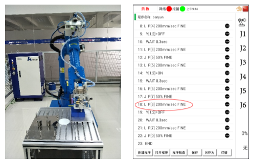

2.2搬运编程与操作
2.2.6搬运示教编程
为了使机器人能够进行再现，就必须把机器人运动命令编成程序。利用工业机器人把工件从A点搬到B点，此程序由6个程序点组成，搬运程序如下：
表2-4 搬运程序
| 程序 | 程序注释 |
|---|---|
| J P[0] 50% FINE | 回初始位置 |
| J P[1] 50% FINE | 移至第一个拾取点正上方 |
| L P[2] 200mm/sec FINE | 移至第一个工件拾取点 |
| Y[1,2]=ON | 吸取工件 |
| WAIT 0.3s | 等待吸取到位 |
| L P[1] 200mm/sec FINE | 移至第一个拾取点正上方 |
| J P[3] 50% FINE | 移至第一个放置点正上方 |
| L P[4] 200mm/sec FINE | 移至第一个拾取点 |
| Y[1,2 ]=OFF | 释放工件 |
| WAIT 0.3s | 等待释放到位 |
| L P[3] 200mm/sec FINE | 移至第一个放置点正上方 |
| J P[5] 50% FINE | 移至第二个拾取点正上方 |
| L P[6] 200mm/sec FINE | 移至第二个拾取点 |
| Y[1,2 ]=ON | 吸取工件 |
| WAIT 0.3s | 等待吸取到位 |
| L P[5] 200mm/sec FINE | 移至第二个拾取点正上方 |
| J P[7] 50% FINE | 移至第二个放置点正上方 |
| L P[8] 200mm/sec FINE | 移至第二个放置点 |
| Y[1,2 ]=OFF | 释放工件 |
| WAIT 0.3s | 等待释放到位 |
| L P[7] 200mm/sec FINE | 移至第二个放置点正上方 |
| J P[0] 50% FINE | 回初始位置 |
| END |
1、新建程序
启动机器人，手动操作机器人返回参考点。点击图2-21所示的“示教界面”屏幕下方的“ 新建程序 ”按钮，弹出如图2-22所示界面，在新建程序对话框中输入程序名称"banyun"，点击完成，点击"确认"，显示如图2-22界面。
图2-21 新建程序界面（1）
图2-22 新建程序界面
2、编写程序
在示教界面编写程序。点击程序检查检查程序是否出错。
图2-23 编写程序界面
3、示教点
手动移动机器人到目标位置，如图2-24。
图2-24 初始位置
手动操作界面设置工具坐标系为工具0，工件坐标系为工件0。选中P0所在的语句，长按，弹出行编辑对话框，点击修改位置。在弹出的位置变量设置界面中设置点击刷新坐标系，设置坐标类型为直角，工具坐标系设置为工具0，工件坐标系设置为工件0,然后点击确认保存坐标数据。
图2-25 示教目标点
同样的方法依次示教其他几个目标点的数据，并进行程序的保存。
图2-26 第一个拾取点
图2-27 第一个拾取点正上方
图2-28 第一个放置点
图2-29 第一个放置点正上方
图2-30 第一个放置点正上方
图2-31 第二个拾取点
图2-32 第二个拾取点正上方

图2-33 第二个放置点
图2-34 第二个放置点正上方
4、程序检查
在首次运行新编写的程序之前，先执行程序检查，以保证程序的正常运行。HSR-JR612机器人系统支持对编写的程序进行语法检查，若程序有语法错误，提示报警号、出错程序及错误行号。程序报警定义请参照本书后面的附录，错误提示信息中括号中的数据即为报警号。 若程序没有错误，提示程序检查完成。
运行测试之前可以在工业机器人末端安装一个印章，在桌子上放置两个本子。根据印章图形的重合度，判断机器人运行轨迹的正确性。加载已编好的程序，若想先试运行单个运行轨迹，可选择“ 指定行 ”，输入试运行的指令所在的行号，系统自动跳转到该指令。点击修调值修改按钮“ + ”和“ - ”将程序运行时速度倍率修调值减小。选择单步运行模式，点击启动，试运行该指令，机器人会根据程序指令进行相关的动作。根据机器人实际运行轨迹和工作环境需要可适当添加中间点。